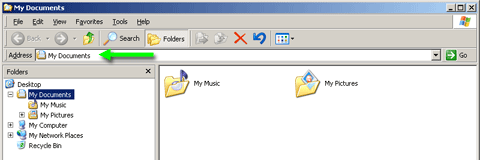

Improve Productivity And Performance By Changing The Windows XP Default GUI
Version: Default* | Print Friendly With Images | Print Friendly Without Images
For: Windows XP (32)
Last Reviewed/Updated: 13 Apr 2010 | Published: 18 Aug 2002 | Status: Active
- 1. Introduction
- 2. Start Menu: Classic
- 3. Control Panel: Classic View
- 4. Control Panel And My Computer: Window Classic Folders
- 5. Theme: Windows Classic
- 6. Visual Effects: Adjust For Best Performance
- 7. Taskbar: Disable Group Similar Taskbar Buttons
- 8. Taskbar: Show Quick Launch Bar
- 9. Notification Area: Disable Hide Inactive Icons
- 10. Start Menu: Disable Personalized Menus
- 11. Windows Explorer And My Computer: Show Address Bar
- 12. Windows Explorer And My Computer: Show Status Bar
- 13. Search: Turn Off Animated Character
- 14. Search: All Files And Folders
- 15. Endnotes
When Windows XP was released, most Windows 98, Windows ME, and Windows 2000 Professional (Windows 98/ME/2000) users found its colorful graphical user interface (GUI) lively and exciting. Windows 98/ME/2000 users more interested in substance over style, however, realized not only that in many respects the Windows XP GUI decreased user productivity (i.e., was distracting and/or required additional operations to accomplish a task), but that in almost every respect the Windows XP GUI decreased computer performance (i.e., made the computer slower, even if only slightly). In other words, while most were praising the Windows XP GUI, a few were looking for ways to change the Windows XP GUI to that more reminiscent of the Windows 98/ME/2000 GUI.
The Windows XP default Start menu is too busy, which decreases productivity and performance:
The Classic Start menu reminiscent of Windows 98/ME/2000:
- Click Start | Control Panel | Appearance and Themes | Taskbar and Start Menu | Start Menu. Alternatively, right click Start and then click Properties.
- Select Classic Start menu.
- Click OK.
3. Control Panel: Classic View
The Windows XP default Control Panel does not list all of the individual Control Panel objects. Instead, it buries them under Categories, which decreases productivity:
The Classic View Control Panel reminiscent of Windows 98/2000 (1):
- Click Start | Settings | Control Panel.
- In the left sidebar under Control Panel, click Switch to Classic View.
4. Control Panel And My Computer: Windows Classic Folders
The Windows XP default Control Panel (including some of the individual Control Panel objects) and My Computer includes a left sidebar that contains links known as Common Tasks In Folders. For those new to Windows, Common Tasks In Folders may increase productivity. But for those familiar with Windows, Common Tasks In Folders is too busy, which decreases productivity and performance:
The Control Panel with Windows Classic Folder (2):
- Click Start | Settings | Control Panel | Tools | Folder Options.
- In the Tasks fieldset, select Use Windows classic folders.
- Click OK.
The Windows XP default theme with its Bliss desktop and brilliant blue title bars and taskbars is ugly, over-bearing, childish looking, and decreases performance:
The Windows Classic theme reminiscent of Windows 98/ME/2000:
- Click Start | Settings | Control Panel | Display. Alternatively, right click the desktop and then click Properties.
- In the Theme dropdown, select Windows Classic.
- Click OK.
6. Visual Effects: Adjust For Best Performance
The Windows XP default GUI uses 15+ Visual Effects including animations, fading, shadows, sliding, smoothing, etc. These Visual Effects are superfluous and not only decrease performance, but, in some cases, decrease productivity.
No Visual Effects reminiscent of Windows 98/ME/2000:
- Click Start | Settings | Control Panel | System | Advanced.
- In the Performance fieldset, click Settings.
- Select Adjust for best performance.
- Click OK | OK.
iThe following items listed in the Visual Effects tab were already addressed in this page:
- Use common tasks in folders, see Control Panel And My Computer: Window Classic Folders (above).
- Use visual styles on windows and buttons, see Theme: Windows Classic (above).
7. Taskbar: Disable Group Similar Taskbar Buttons
The Windows XP default taskbar automatically groups multiple similar taskbar buttons under a single taskbar button in what is known as Group similar taskbar buttons. Although Group similar taskbar buttons cleans up the taskbar, it decreases performance and requires the user to perform a click in order to access the individual taskbar buttons, which decreases productivity:
The taskbar without Group similar taskbar buttons reminiscent of Windows 98/ME/2000:
- Click Start | Settings | Control Panel | Taskbar and Start Menu. Alternatively, right click Start and then click Properties | Taskbar.
- In the Taskbar appearance fieldset, uncheck Group similar taskbar buttons.
- Click OK.

8. Taskbar: Show Quick Launch Bar
The Quick Launch bar is an area of the taskbar into which shortcuts to programs and destinations can be placed. The utility of the Quick Launch bar is that, by default, it is always visible and, therefore, any shortcuts placed in the Quick Launch bar are always immediately accessible. This is in contrast not only to the shortcuts of the Start menu, which are buried under the Start button, but to the shortcuts on the desktop, which can be buried under opened programs. The Windows XP default taskbar does not show the Quick Launch bar, which decreases productivity:

The taskbar showing the Quick Launch bar reminiscent of Windows 98/ME/2000:
- Click Start | Settings | Control Panel | Taskbar and Start Menu. Alternatively, right click Start and then click Properties | Taskbar.
- In the Taskbar appearance fieldset:
- Uncheck Lock the taskbar. This allows you to change/manipulate toolbars added to the taskbar.
- Check Show Quick Launch. This adds the Quick Launch bar to the taskbar.
- Click OK.
9. Notification Area: Disable Hide Inactive Icons
The Windows XP default notification area automatically hides infrequently clicked program icons under an expand arrow in what is known as Hide Inactive Icons. Although Hide Inactive Icons cleans up the notification area, it decreases performance and not only requires the user to perform a click in order to access the hidden icons, but can lead the user into forgetting that such-and-such programs are installed and loaded on Startup, both of which decrease productivity:
The notification area without Hide Inactive Icons reminiscent of Windows 98/ME/2000:
- Click Start | Settings | Control Panel | Taskbar and Start Menu. Alternatively, right click Start and then click Properties | Taskbar.
- In the Notification area fieldset, uncheck Hide inactive icons.
- Click OK.
10. Start Menu: Disable Personalized Menus
The Windows XP default Start menu automatically hides infrequently clicked shortcuts under expand arrows in what is known as Personalized Menus. Although Personalized Menus cleans up the Start menu, it decreases performance and not only requires the user to perform a click in order to access the hidden shortcuts, but can lead the user into forgetting that such-and-such programs are installed and available, both of which decrease productivity:
The Start menu without Personalized Menus reminiscent of Windows 98 (3):
- Click Start | Settings | Control Panel | Taskbar and Start Menu | Start Menu. Alternatively, right click Start and then click Properties.
- Next to Classic Start menu, click Customize.
- In Advanced Start menu options, uncheck Use Personalized Menus.
- Click OK | OK.

11. Windows Explorer And My Computer: Show Address Bar
The address bar displays the path to the object selected in Windows Explorer or My Computer. The path to the object selected is useful not only for reference, but can be copied and pasted as needed. The Windows XP Home Edition default Windows Explorer and My Computer do not show the address bar, which decreases productivity:
Windows Explorer showing the address bar reminiscent of Windows 98/ME/2000/XP Pro:
- Open Windows Explorer.
- Click View | Toolbars and uncheck Lock the Toolbars. This allows you to change/manipulate toolbars added to Windows Explorer.
- Click View | Toolbars and check Address Bar. This shows the address bar in Windows Explorer:
- The address bar's address field is not visible. There are two ways to expose the address bar's address field, each involves dragging the raised vertical bar located to the left of the word, Address, which is present only if Lock the Toolbars is uncheck as described above: The first is to widen the address bar by dragging the raised vertical bar to the left (not shown). The second is to move the address bar to its own "line" by dragging the raised vertical bar straight down (shown):

12. Windows Explorer And My Computer: Show Status Bar
The status bar displays useful information about the object selected in Windows Explorer or My Computer. If a drive or folder is selected, the status bar displays the number of objects (i.e., files and folders) under the selected drive or folder and the amount of disk free space. If a file is selected, the status bar displays the file type, date modified/created, and file size. The Windows XP default Windows Explorer and My Computer do not show the status bar, which decreases productivity:
Windows Explorer showing the status bar reminiscent of Windows 98/ME/2000:
- Open Windows Explorer.
- Click View and then check Status Bar.
13. Search: Turn Off Animated Character
The Windows XP default Search dialog includes an Animated Character, Rover the dog, which not only decreases performance, but, through the distraction, decreases productivity:
The Search dialog without the Animated Character reminiscent of Windows 2000:
- Click Start | Search | For Files or Folders.
- In the left pane, click Turn off animated character.
14. Search: All Files And Folders
The Windows XP default Search dialog presents a number of search options, including searching for: 1.) Picture, music, or video; 2.) Documents (word processing, spreadsheet, etc.); 3.) All files and folders; and 4.) Computers or people. For those new to Windows, the search options may increase productivity. But for those familiar with Windows and only interested in searching All Files And Folders, the search options are too busy and require the user to perform a click in order to access the search criteria fields, both of which decrease productivity:
Search All Files And Folders reminiscent of Windows 98/ME/2000:
- Click Start | Search | For Files or Folders.
- In the left pane, click Change preferences | Change files and folders search behavior | Advanced | OK.
(1) Like the Windows XP default Control Panel, the Windows ME default Control Panel does not list all of the individual Control Panel objects. Unlike the Windows XP default Control Panel which buries them under Categories, the Windows ME default Control Panel lists only the so called "commonly used" Control Panel objects. To apply the Classic View Control Panel reminiscent of Windows 98/2000 to Windows ME, open Control Panel and in the left sidebar click view all Control Panel options.
(2) Like the Windows XP default Control Panel and My Computer, the Windows 98/ME/2000 default Control Panel and My Computer includes a left sidebar. Unlike Windows XP which refers to the left sidebar as Common Task In Folders, Windows 98/ME/2000 refers to the left sidebar as Web content. To remove Web content from Control Panel and My Computer in Windows 98, open Control Panel or My Computer and click View | Folder Options | Settings. In the View Web content in folders fieldset, select Only for folders where I select "as Web Page" (View menu). The next time Control Panel or My Computer is opened Web content does not appear. To remove Web content from Control Panel and My Computer in Windows ME/2000, open Control Panel or My Computer and click Tools | Folder Options. In the Web View fieldset, select Use Windows classic folders.
(3) Like the Windows XP default Start menu, the Windows ME/2000 default Start menu automatically hides infrequently clicked shortcuts under expand arrows in what is known as Personalized Menus. To disable Personalized Menus in Windows ME/2000, click Start | Settings | Taskbar and Start Menu | uncheck Use Personalized Menus.